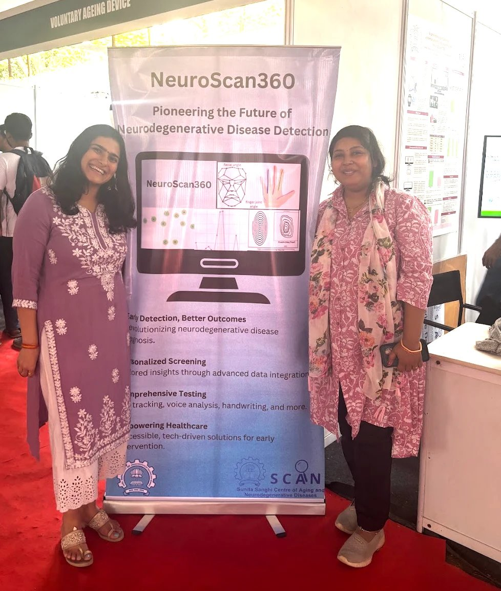
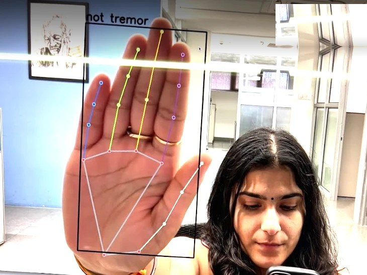

Neuroscan360
A system that screens for neurodegenerative diseases through 23 short games, with no clinician needed to run it, and turns the way someone plays into risk signals a clinician can use.

The problem
I grew up watching three of my grandparents live with a neurodegenerative disease. I watched my maternal grandmother slowly forget who we all were, with all the grandchildren morphing into one hazy blur because of Alzheimer’s. I watched my maternal grandfather, a proud, independent man, slowly lose the ability to eat his own meals and hold a conversation because of Parkinson’s. I watched my paternal grandfather, who loved long walks and his independence, slowly be reduced to teetering steps and eventually become bedbound because of PSP.
Neurodegenerative diseases like Alzheimer’s and Parkinson’s are often caught late, because the symptoms build up slowly and testing usually means a specialist and a clinic visit. Moreover, you can go to several different neurologists and no two will run the same tests. While there are standardized measurements, there is no set test suite for diagnosing these agonizing diseases. With a prodrome of 5–10 years, many vision, speech, motor coordination, memory and olfactory symptoms start appearing that are not visible to the naked eye but, with the right tools, can be caught earlier. That is where Neuroscan360 comes in.
What I built
I built the whole software side of Neuroscan360: a full-stack platform, computer vision that reads pose, gaze and facial landmarks from an ordinary webcam, a layer that connects the hardware sensors, a feature extraction step across six types of signal, and a scoring engine that turns those signals into a risk profile for each disease.
The eye tracking runs entirely in software, with no special eye-tracking hardware, and the face tracking keeps working when someone is wearing a mask. Once the features are pulled out, the system discards the extra data so a person can’t be identified from what is kept.
There are three portals on top of it, for the person taking the test, their caretaker and their clinician. The clinician’s view tracks results over time and sends an alert when something changes.
We aim to be a helpful comprehensive test suite for doctors to reference, and not a complete diagnosis in itself. The scores we offer are risk signals for a clinician to interpret.
How it works
Our collaboration
My collaborator Priya Pallavi designed all of the hardware: a writing tablet for spiral and clock drawing, a watch that picks up tremor at rest, a tapping pad for slowness of movement, and the camera setup. I wrote everything that makes those parts work together and make sense of what they record.
We worked on everything together. We read literature of every sort side by side, and excitedly played with and tested ideas to find out what would get us closest to catching a symptom at an early stage. We integrated the sensors and burned through many, many Arduino boards. And we painstakingly read over 342 patent abstracts from around the world to see whether anything like this had been done before. The answer, in isolation, was yes. But as a comprehensive test suite? Never before!

Why games
Because games are fun! No one wants to sit through a blank screening questionnaire that might tell them whether or not they have an incurable condition. The tasks sit inside a story that carries on from one session to the next, and a game host guides the person and repeats an instruction if they hesitate. When the system notices fatigue or stress, it adds a rest break or eases the difficulty.
The challenge, of course, was our target population. In our year of building, 2024–2025, we were designing for people who are not digital natives. Using a mouse and keyboard is second nature for most people aged 60 and under now, but the generation that retired before personal computers took over every household are “iPad grandparents” today. They can use touchscreens, but computers and mice are a challenge. Still, our idea was accessibility.
And that is the trade-off that comes with accessibility. The idea is that even in a remote village in India (cut off from every major city, with no buses, and a long, winding path along kacha, or unpaved, roads to reach it), you should still be able to get this test running for the patients there. That is the idea.
Now, how do you make that true? We couldn’t build it for an iPad, because personal computers are pretty cheap now, which means nearly every doctor already has one. So we made a system that is Windows- and macOS-compatible so that it could run on those. We acknowledge that a big limitation is that a touchscreen would be a lot easier for the elderly. We are keeping that in mind for future iterations, and it is something we plan to work on.
At the same time, this is a problem that will fade. The next generation, who are in their 50s now and will be in their 60s or 70s, will not find it such a barrier. Honestly, Neuroscan360 probably won’t see the light of day until then, because it involves human lives and we want to be sure it goes through a thorough clinical trial first. We are in the process of that right now.
What's next
This whole project is a labor of love. Priya and I have each, personally and up close, watched someone struggle with a neurodegenerative disease, and we know how hard it is.
Interacting with so many patients, especially while running the pilot trials, I saw how many people looked at us with so much hope in their eyes. Their spouses or parents might finally find a way to beat this awful disease, or feel more empowered and self-reliant.
There’s a lot still to do. We spent much of the first half of our collaboration just reading a lot, and lot, and lot of papers.
One major thing missing is an olfactory test. Loss of smell, total or partial, appears at least 5 to 10 years before Parkinson’s or Alzheimer’s sets in for 60% of people. We left it out because producing the smell packets and keeping them clean is a real challenge, and we didn’t want a supply chain issue to put our whole system’s credibility, and the clinics relying on it, at risk. Ideally, I would like to work on it, because it is such a massive early symptom of these diseases.
Beyond that, we want to build a more touchscreen-friendly version for our iPad grandparents, and continue the clinical trials. As for the rest, I’m very, very happy with how it has turned out. These have been the best years of my life so far.